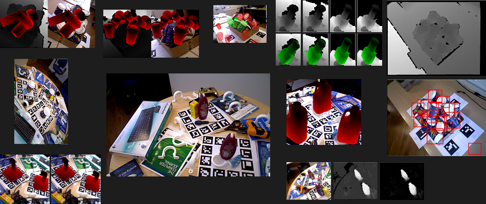

| C. Sahin, T-K. Kim,
Recovering 6D Object Pose: Reviews and Multi-modal Analyses, ECCV Workshop on ACVR, Munich, Germany, 2018. Download: pdf |
||
| T. Hodan, F. Michel, E. Brachmann, W. Kehl, A. Buch, D. Kraft, B. Drost, J. Vidal, S. Ihrke, X. Zabulis, C. Sahin, F. Manhardt, F. Tombari, T-K. Kim, J. Matas, C. Rother,
BOP: Benchmark for 6D Object Pose Estimation, Proc. of IEEE European. Conf. on Computer Vision (ECCV), Munich, Germany, 2018. Download: pdf |
||
| J. Sock, K.I. Kim, C. Sahin, T-K. Kim,
Multi-Task Deep Networks for Depth-Based 6D Object Pose and Joint Registration in Crowd Scenarios, Proc. of British Machine Vision Conference (BMVC), Newcastle upon Tyne, UK, 2018. Download: pdf |
||
| S. Kasaei, J. Sock, L. Lopes, A. Tome, T-K. Kim,
Perceiving, Learning, and Recognizing 3D Objects: An Approach to Cognitive Service Robots, Proc. of the Association for the Advancement of Artificial Intelligence (AAAI), New Orleans, USA, 2018 (oral). Download: pdf |
||
| V. Balntas, A. Doumanoglou, C. Sahin, J. Sock, R. Kouskouridas, T-K. Kim,
Pose Guided RGBD Feature Learning for 3D Object Pose Estimation, Proc. of IEEE Int. Conf. on Computer Vision (ICCV), Venice, Italy, 2017. Download: pdf |
||
 | R. Kouskouridas, A. Tejani, A. Doumanoglou, D. Tang, T-K. Kim,
Latent-Class Hough Forests for 6 DoF Object Pose Estimation, IEEE Trans. on PAMI (TPAMI), accepted to appear, 2017. Download: pdf |
|
| C. Sahin, R. Kouskouridas, T-K. Kim,
A Learning-based Variable Size Part Extraction Architecture for 6D Object Pose Recovery in Depth Images, Journal of Image and Vision Computing (IVC), 63:38-50, 2017. Download: pdf |
||
| J. Sock, S. Kasaei, L. Lopes, T-K. Kim,
Multi-view 6D Object Pose Estimation and Camera Motion Planning using RGBD Images, Proc. of IEEE ICCV workshop on Recovering 6D Object Pose, Venice, Italy, 2017. Download: pdf |
||
 | A. Doumanoglou, R. Kouskouridas, S. Malassiotis, T-K. Kim,
Recovering 6D Object Pose and Predicting Next-Best-View in the Crowd, Proc. of IEEE Conf. on Computer Vision and Pattern Recognition (CVPR), Las Vegas, USA, 2016. Download: pdf / video |
|
| A. Doumanoglou, J. Stria, G. Peleka, I. Mariolis, V. Petrik, A. Kargakos, L. Wagner, V. Hlavac, T-K. Kim, S. Malassiotis,
Folding Clothes Autonomously: A Complete Pipeline, IEEE Transactions on Robotics, 2016. Download: pdf |
||
 | C. Sahin, R. Kouskouridas, T-K. Kim,
Iterative Hough Forest with Histogram of Control Points for 6 DoF Object Registration from Depth Images, IEEE/RSJ International Conference on Intelligent Robots and Systems (IROS), Daejeon, Korea, 2016. Download: pdf / video |
|
 | A. Doumanoglou, T-K. Kim, X. Zhao, S. Malassiotis,
Active Random Forests: An application to Autonomous Unfolding of Clothes, Proc. of European Conference on Computer Vision (ECCV), Zurich, Switzerland, 2014. Download: pdf / video |
|
| A. Doumanoglou, A. Kargakos, T-K. Kim, S. Malassiotis, Autonomous Active Recognition and Unfolding of Clothes using Random Decision Forests and Probabilistic Planning, Proc. of IEEE Int. Conf. on Robotics and Automation (ICRA), Hong Kong, China, 2014. Download: pdf / video |
||
| A. Tejani, D. Tang, R. Kouskouridas, T-K. Kim, Latent-Class Hough Forests for 3D Object Detection and Pose Estimation, Proc. of European Conference on Computer Vision (ECCV), Zurich, Switzerland, 2014. Download: pdf / video |
||
| Y. Liu*, Y. Jang*, W. Woo, T-K. Kim, Video-based Object Recognition using Novel Set-of-Sets Representation, Proc. of 3rd Workshop on Egocentric (First-person) Vision (In conjunction with CVPR), Columbus, Ohio, USA, 2014, (*indicates equal contribution). Download: pdf |
||
 | Y. Chen, T-K. Kim, R. Cipolla, Inferring 3D Shapes and Deformations from Single Views, Proc. of European Conference on Computer Vision (ECCV), Crete, Greece, 2010. Download: pdf |
|

|
|
Object Recognition, Detection, and 6D Pose Estimation |
|
|  |
|
|